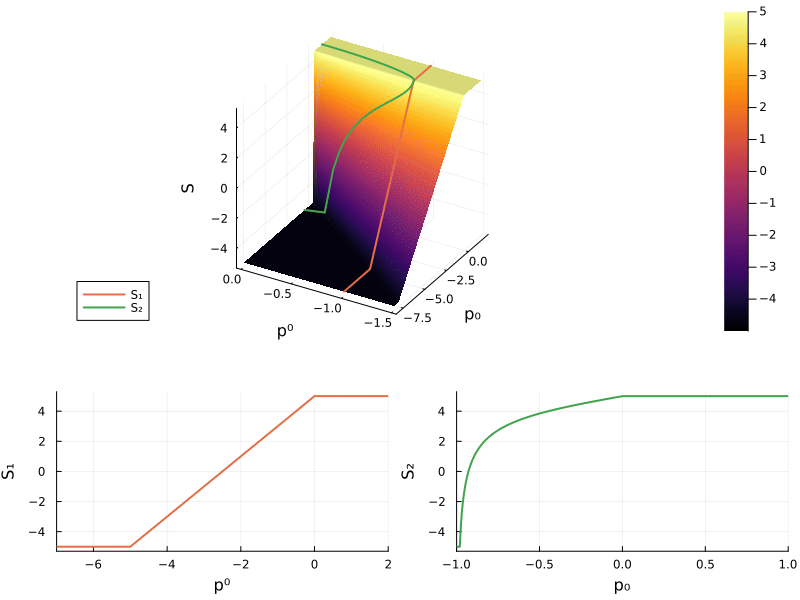
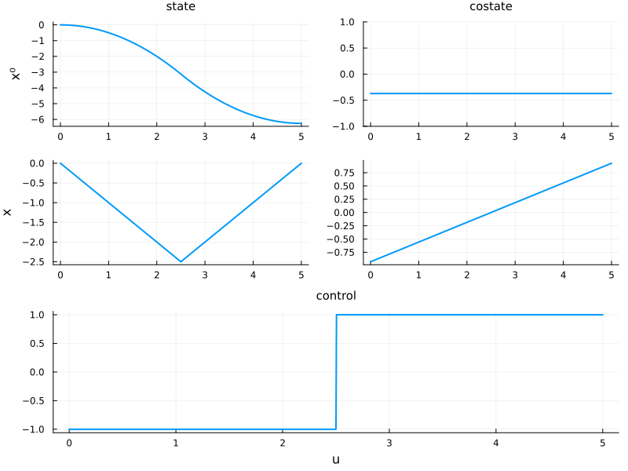
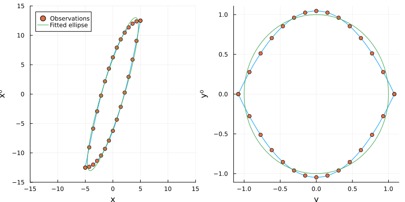
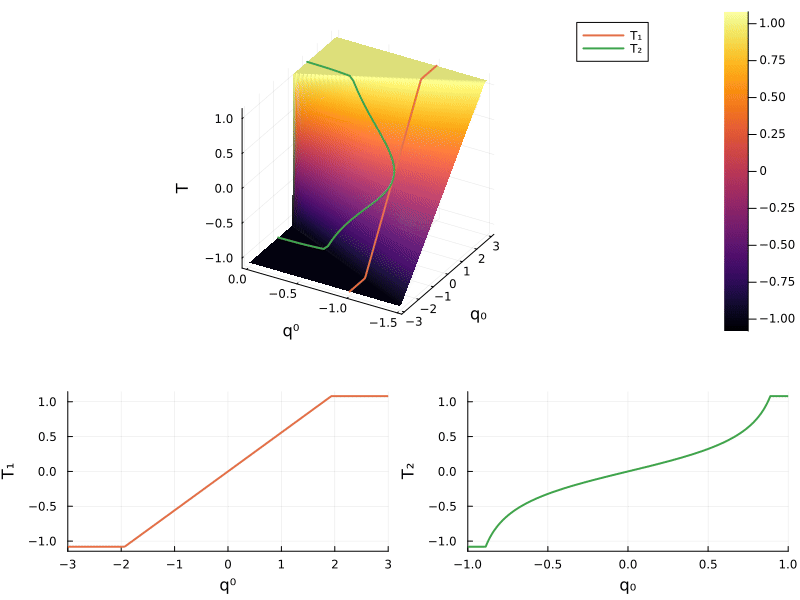
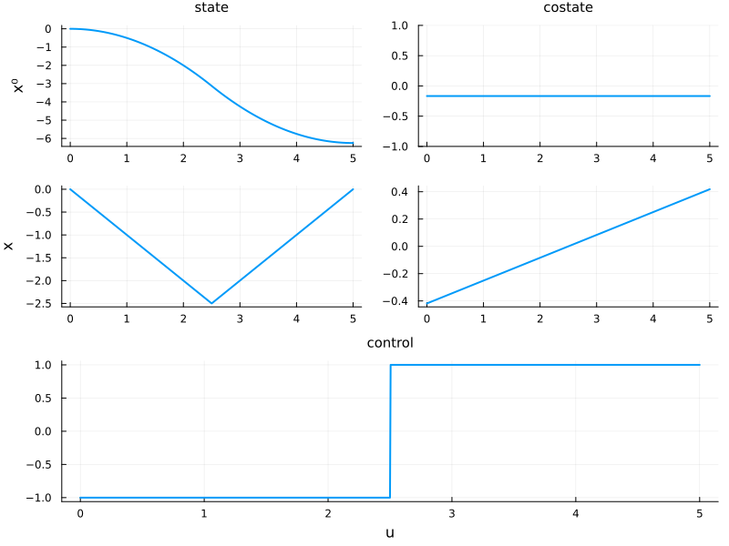
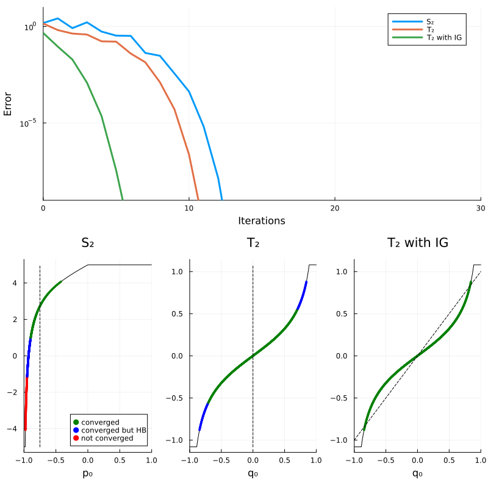

The goal is now to improve the convergence of the indirect shooting method, by using a geometric preconditioner of the shooting function. The classical shooting method suffers from poor convergence properties, and one need to provide a good initial guess for the costate. The geometric preconditioning approach transforms the boundary value problem into a coordinate system that aligns with a natural structure, which significantly improve the convergence rate of the shooting method.
The key idea is to approach the augmented accessible set by an ellipse, in order to propose a linear diffeomorphism that trasnform this ellipse into the unit circle. This diffeomorphism is then used to precondition the shooting function, which improves the convergence rate of the shooting method. For more information about this method, please see [insert article].
Let us start by importing the packages
using GeometricPreconditioner
using OptimalControl
using Plots
using ForwardDiff
using DifferentialEquations
using MINPACK
using Statistics
using LinearAlgebraPlease note that we use the GeometricPreconditioner.jl package only for some functions used for the construction of plots or for fitting ellipses to data, which are provided by the utils.jl file.
Augmented formulation
Let us consider the augmented formulation of the same problem as before
\[ \left\{ \begin{array}{ll} \displaystyle \min_{\hat x,u} x^0(t_f) \\[1em] \text{s.c.}~\dot x^0(t) = x(t), & t\in [t_0, t_f]~\mathrm{a.e.}, \\[0.5em] \phantom{\mathrm{s.c.}~} \dot x(t) = u(t), & t\in [t_0, t_f]~\mathrm{a.e.}, \\[0.5em] \phantom{\mathrm{s.c.}~} u(t) \in [-1,1], & t\in [t_0, t_f], \\[0.5em] \phantom{\mathrm{s.c.}~} x^0(t_0) = 0, \quad x(t_0) = x_0, \quad x(t_f) = x_f, \end{array} \right.\]
with fixed initial state $x_0$, initial time $t_0$, final state $x_f$ and final time $t_f$, and where the augmented state is given by $\hat x = (x^0, x)$, where $x^0$ is the cost and $x$ is the state. The augmented Hamiltonian is thus given by
\[ H(\hat x, \hat p) = p^0 x + \lvert p \rvert,\]
where $\hat p = (p^0, p)$ is the augmented costate, composed of the costate $p$ associated with the state $x$ and multiplier $p^0$ associated with the cost $x^0$. The flow $\varphi$ associated to the true Hamiltonian $H$ is computed thanks to the Flow and the Hamiltonian functions, computed properly as proposed in the last section.
Details
# Global control variable for bang-bang control (±1)
global α = 1
# Condition function: triggers callback when p = 0 (control switching)
function condition(z, t, integrator)
x⁰,x,p⁰,p = z
return p
end
# Affect function: flips control sign when condition is met (bang-bang switching)
function affect!(integrator)
global α = -α
nothing
end
cb = ContinuousCallback(condition, affect!) # Continuous callback for control switching
H(x, p) = p[1] * x[2] + α * p[2] # Hamiltonian function
ϕ_ = Flow(OptimalControl.Hamiltonian(H), callback = cb) # Hamiltonian flow with maximizing control
# Flow wrapper for shooting function: sets initial control direction based on costate
function ϕ(t0, x0, p0, tf; kwargs...)
if p0[2] == 0
global α = -sign(p0[1]) # Set control based on p⁰ if p₀ = 0
else
global α = sign(p0[2]) # Set control based on p
end
return ϕ_(t0, x0, p0, tf; kwargs...)
end
# Flow wrapper for plotting: handles time interval tuple
function ϕ((t0, tf), x0, p0; kwargs...)
if p0[2] == 0
global α = -sign(p0[1])
else
global α = sign(p0[2])
end
return ϕ_((t0, tf), x0, p0; kwargs...)
endϕ (generic function with 2 methods)Classical shooting method
The general shooting function $S \colon \mathbb R^2 \to \mathbb R$ associated to this Hamiltonian is defined by
\[ S(\hat p_0) = \pi_x \big( \varphi(t_0, \hat x_0, \hat p_0, t_f) \big),\]
where $\pi_x(x^0, x, p^0, p) = x$ is still the state projection.
We are interested in two normalizations of this shooting function which leads to the two following shooting functions
\[ S_1(p_0) = S(-1, p_0) \qquad \text{and} \qquad S_2(p_0) = S \big( \eta(p_0), p_0 \big)\]
where the function $\eta \colon [-1, 1] \to \mathbb R$ is defined by
\[ \eta(p) = -\sqrt{ 1 - p^2}.\]
The following code creates and plots these shooting functions.
# Problem parameters
t0 = 0 # Initial time
x0 = [0,0] # Initial augmented state (x⁰, x)
tf = 5 # Final time
global xT = 0 # Target final state
# Helper functions
π((x,p)) = x[2] # Projection on state space (extract x from augmented state)
η(p0) = -sqrt.(1 - p0.^2) # Function η(⋅) = -√(1 - p0²)
# Shooting function S
S(p0; xT=xT) = π( ϕ(t0, x0, p0, tf) ) - xT # General shooting function
# Normalized shooting functions for different boundary conditions
S₁(p0; xT=xT) = S([-1, p0]; xT=xT) # Normalization 1: fix p⁰ = -1
S₂(p0; xT=xT) = abs(p0) < 1 ? S([η(p0), p0]; xT=xT) : sign(p0)*tf - xT # Normalization 2: use function η to have |p|=1
# Create animated 3D plot of shooting functions
plt = plot_shooting(S, S₁, S₂, :S) # Plot (see utils.jl)
@gif for i ∈ [range(30, 90, 50); 90*ones(25); range(90, 30, 50); 30*ones(25)]
plot!(plt[1], camera=(i,i), # Rotate camera angle
zticks = i==90 ? false : true,
zlabel = i==90 ? "" : "S" )
end
We can use the solver hybrd1 from the MINPACK.jl package to find a zero of the shooting function $S_2$.
# Global vector to store solver iterates
global iterate_S2 = Vector{Float64}()
# Wrapper function for S₂ compatible with MINPACK solver (stores iterates)
function S₂!(s₂, ξ; xT=xT)
push!(iterate_S2, ξ[1]) # Store current iterate
return (s₂[:] .= S₂(ξ[1]; xT=xT); nothing) # Compute S₂ value in-place
end
# Jacobian of S₂ using automatic differentiation
JS₂(ξ; xT=xT) = ForwardDiff.jacobian(p0 -> [S₂(p0[1]; xT=xT)], ξ)
# Wrapper for Jacobian compatible with MINPACK solver
JS₂!(js₂, ξ; xT=xT) = (js₂[:] .= JS₂(ξ; xT=xT); nothing)
ξ = [-0.5] # Initial guess for solver
p0_sol = fsolve(S₂!, JS₂!, ξ, show_trace = true) # Solve S₂(p0) = 0 using MINPACKResults of Nonlinear Solver Algorithm
* Algorithm: Modified Powell (User Jac, Expert)
* Starting Point: [-0.5]
* Zero: [-0.9284766908852256]
* Inf-norm of residuals: 0.000000
* Convergence: true
* Message: algorithm estimates that the relative error between x and the solution is at most tol
* Total time: 5.274395 seconds
* Function Calls: 17
* Jacobian Calls (df/dx): 2And we can compute the optimal trajectory and plot the solution.
# Compute optimal trajectory
sol = ϕ((t0, tf), x0, [η(p0_sol.x[1]), p0_sol.x[1]], saveat=range(t0, tf, 500))
# Plot the optimal solution (state, costate, and control) (see utils.jl)
plot_sol(sol)
Construction of the geometric preconditioner
The goal is now to use the geometric preconditioning method proposed in [mettre article]. For this purpose, the first step is to create points on the boundary of the accessible augmented set, and to fit an ellipse to these points.
The second step is to create the linear diffeomorphism $\phi \colon \mathbb R^2 \to \mathbb R^2, \hat x \to A \hat x + B$ that transforms the fitted ellipse into the unit circle, and that satisfies the condition
\[ \frac{\partial \phi}{\partial x^0} = k e_1, \]
with $k>0$ and $e_1 = (1,0)$. In this context, we denote
\[ A = \left( \begin{array}{cc} k & A_{x^0} \\ 0 & A_{x} \end{array} \right) \qquad \text{and} \qquad B = \left( \begin{array}{c} B_{x^0} \\ B_{x} \end{array} \right).\]
This diffeomorphism is given by the semi-axes $a,b >0$, the angle $\theta \in [0, \frac{\pi}{2}[$ between the semi-axis $b$ and the x-axis, and the center $c \in \mathbb R^2$ by
\[ \phi(x) = r(-\beta_0) s(a^{-1}, b^{-1}) r(\theta) (x - c),\]
where $r$ and $s$ correspond respectively to the rotation and the scaling matrix, defined by
\[ r(\theta) = \left( \begin{array}{cc} \phantom - \cos(\theta) & \sin(\theta) \\ -\sin(\theta) & \cos(\theta) \end{array} \right) \qquad \text{and} \qquad s(a,b) = \left( \begin{array}{cc} a & 0 \\ 0 & b \end{array} \right),\]
and where $\beta_0 = \arctan \left(\frac{a \sin(\theta)}{b \cos(\theta)} \right)$.
Function `plot_ellipse`
function plot_ellipse(a,b,θ,c,φ,x)
# Generate data for the boundary of the accessible set
n_ = 100 # Number of points for boundary
# Create initial costate values along the boundary
p0_ = [[[-1, i] for i ∈ range(-tf, 0, n_)]; # Left side (p⁰ = -1)
[[1, i] for i ∈ range(tf, 0, n_)]] # Right side (p⁰ = 1)
x_ = zeros(2, 2*n_); p_ = zeros(2, 2*n_) # Initialize final state and costate arrays
# Compute flow for each initial costate to get the boundary
for i in eachindex(p0_)
x_[:,i], p_[:,i] = ϕ(t0, x0, p0_[i], tf) # Compute Hamiltonian flow
end
# Generate ellipse points
β = range(-Base.π, Base.π; length = 100) # Angle parameter for ellipse
# Compute ellipse points: rotate by -Θ, scale by (a,b), shift by center c
xₑ = r(-θ)*s(a,b)*
transpose(reduce(hcat,[sin.(β), cos.(β)])).+c # Ellipse boundary points
# Transform coordinates using the function ϕ
y = φ(x); y_ = φ(x_); yₑ = φ(xₑ) # Apply transformation to all data
# Plot in original coordinates (x, x⁰)
plt_x = plot(x_[2,:], x_[1,:], label = nothing) # Accessible set boundary
scatter!(x[2,:], x[1,:], label="Observations", legend = :topleft) # Data points
plot!(xₑ[2,:], xₑ[1,:], label = "Fitted ellipse") # Fitted ellipse
plot!(xlim = [-15,15], ylim = [-15,15], xlabel = "x", ylabel = "x⁰")
# Plot in transformed coordinates (y, y⁰)
plt_y = plot(y_[2,:], y_[1,:], label = nothing) # Transformed boundary
scatter!(y[2,:], y[1,:], label="") # Transformed observations
plot!(yₑ[2,:], yₑ[1,:], label = "") # Transformed ellipse
plot!( xlabel = "y", ylabel = "y⁰")
return plot(plt_x, plt_y, layout = (1,2), size=(800, 400))
endThis is done in the following code block
# Generate data points for ellipse fitting
n = 15 # Number of sample points
# Create initial costate values along the boundary (both sides)
p0 = [[[-1, i] for i ∈ range(-tf, 0, n)]; # Left side (p⁰ = -1)
[[1, i] for i ∈ range(tf, 0, n)]] # Right side (p⁰ = 1)
# Compute final states and costates by computing the flow from different initial costates
x = zeros(2, 2*n); p = zeros(2,2*n) # Initialize arrays
for i = 1:length(p0)
x[:,i], p[:,i] = ϕ(t0, x0, p0[i], tf) # Compute Hamiltonian flow
end
# Fit ellipse to the accessible set boundary (see utils.jl)
a, b, θ, c = fit_ellipse(x[1,:], x[2,:]) # a: semi-major, b: semi-minor, θ: rotation, c: center
# Helper matrices for coordinate transformation
r(β) = [[cos(β), sin(β)] [-sin(β), cos(β)]] # 2x2 rotation matrix
s(a,b) = [[a,0] [0,b]] # 2x2 scaling matrix
# Construct linear diffeomorphism φ(x) = A*x + B to normalize the ellipse to a circle
d = (a*sin(θ))/(b*cos(θ)); β₀ = atan(d) # Intermediate values for transformation
A = r(-β₀)*s(1/a,1/b)*r(θ); B = -A*c # Compute transformation matrices A and B
φ(x) = A*x .+ B # Diffeomorphism ϕ (affine transformation)
# Visualize the fitted ellipse and transformation (see utils.jl)
plot_ellipse(a, b, θ, c, φ, x)
The general shooting function $T \colon \mathbb R^2 \to \mathbb R$ in the new coordinates is defined by
\[ T(\hat q) = A_{x} \varphi \big(t_0, \hat x_0, \hat p_0 (A^\top \hat q), t_f \big) + B_{x} - y_T,\]
where the function $\hat p_0 \colon \mathbb R^2 \to \mathbb R^2$ corresponds to the mapping between the final and the initial augmented costate, and is given by
\[ \hat p_0(p^0, p) = (p^0, p + p^0 t_f),\]
and $y_T = A_{x} x_T + B_x$ is the target in the new system of coordinates. By using the definition of $S$ and $y_T$, we obtain
\[\begin{align*} T(q) &= A_{x} \varphi \big(t_0, x_0, p_0(A^\top q), t_f) + B_{x} - (A_{x} x_T + B_{x}) \\ &= A_{x} (S \circ p_0)(A^\top q). \end{align*}\]
which highlights that the proposed geometric preconditioning method is a left and right side preconditioner of the shooting function. Finally, we define the two shooting functions $T_1$ and $T_2$ by using the two methods of normalization used before for the function $S$
\[ T_1(q) = T(-1, q) \qquad \text{and} \qquad T_2(q) = T \big(\eta(q), q \big).\]
The shooting functions $T$, $T_1$ and $T_2$ are plotted below:
# Transform shooting functions to new coordinates using the diffeomorphism
p₀(p) = [p[1], p[2] + p[1]*tf] # Inverse transformation for costate
Aₓ = A[2,2]; Bₓ = B[2] # Extract relevant components for state
yT = Aₓ*xT + Bₓ # Target state in new coordinates
# Preconditioned shooting function T in new coordinates
T(q; xT=xT) = Aₓ*(S(p₀(transpose(A)*q); xT=xT)) # General shooting function
T₁(q; xT=xT) = T([-1, q]; xT=xT) # Normalization 1: fix q⁰ = -1
T₂(q; xT=xT) = abs(q) < 1 ? T([η(q), q]; xT=xT) : sign(q)*(Aₓ*tf + Bₓ) # Normalization 2: use function η to have |q|=1
# Create animated 3D plot of transformed shooting functions
plt = plot_shooting(T, T₁, T₂, :T) # Plot in T coordinates
@gif for i ∈ [range(30, 90, 50); 90*ones(25); range(90, 30, 50); 30*ones(25)]
plot!(plt[1], camera=(i,i), # Rotate camera angle
zticks = i==90 ? false : true,
zlabel = i==90 ? "" : "T" )
end
Preconditioned shooting method
We can find a zero of the shooting function $T_2$ by using the same method as done for the function $S_2$.
# Global vector to store solver iterates for T₂ analysis
global iterate_T2 = Vector{Float64}()
# Wrapper function for T₂ compatible with MINPACK solver (stores iterates)
function T₂!(t₂, ξ; xT=xT)
push!(iterate_T2, ξ[1])
return (t₂[:] .= T₂(ξ[1]; xT=xT); nothing)
end
# Jacobian of T₂ using automatic differentiation
JT₂(ξ; xT=xT) = ForwardDiff.jacobian(q0 -> [T₂(q0[1]; xT=xT)], ξ)
# Wrapper for Jacobian compatible with MINPACK solver
JT₂!(jt₂, ξ; xT=xT) = (jt₂[:] .= JT₂(ξ; xT=xT); nothing)
ξ = [0.5] # Initial guess for solver
q_sol = fsolve(T₂!, JT₂!, ξ, show_trace = true) # Solve T₂(q) = 0 using MINPACKResults of Nonlinear Solver Algorithm
* Algorithm: Modified Powell (User Jac, Expert)
* Starting Point: [0.5]
* Zero: [7.348247230204594e-15]
* Inf-norm of residuals: 0.000000
* Convergence: true
* Message: iteration is not making good progress, measured by improvement from last 10 iterations
* Total time: 5.379527 seconds
* Function Calls: 25
* Jacobian Calls (df/dx): 3One can easily retrieve the solution from the zero of $T_2$:
# Transform the solution back to original coordinates
p0_sol = p₀(transpose(A)*[η(q_sol.x[1]), q_sol.x[1]]) # Convert optimal q back to original p coordinates
sol = ϕ((t0, tf), x0, p0_sol, saveat=range(t0, tf, 500)) # Compute optimal trajectory in original coordinates
# Plot the optimal solution
plot_sol(sol)
Comparison
It is shown in [mettre article] that if the boundary of the augmented accessible set is the fitted ellipse then the shooting function $T_2$ is defined by
\[ T_2(q) = q-y_T.\]
Since the boundary of the augmented accessible set is not exactly the fitted ellipse, the function $T_2$ is not the one above, but we hope that this function is close to this ideal function, and therefore the convergence of $T_2$ is faster than the one of $S_2$. Moreover, since $y_T$ is a zero of $T_2$ in this idea case, it is a natural initial guess for the shooting method.
The code below compare the convergence of function $T_2$ and $S_2$, and the function $T_2$ with the natural initial guess.
Code to compare convergence
The code below compares the convergence of these two shooting functions, and provides the following plot.
# ============================================================================
# CONVERGENCE ANALYSIS: Compare S₂ and T₂ shooting methods
# ============================================================================
# Discretize the accessible final state range
global xT = 0;
q0_span = range(-1, 1, length=10000) # Range of q₀ values
T2_span = [T₂(q) for q ∈ q0_span] # Compute T₂ over the range
ε = 0.2 # Tolerance for boundary selection
i1 = findfirst(x -> x > T2_span[1]+ε , T2_span) # Find start index
i2 = findlast(x -> x < T2_span[end]-ε, T2_span) # Find end index
N = 1000 # Number of test points
sol_T2 = range(q0_span[i1], q0_span[i2], length=N) # q₀ values for testing
# Convert to corresponding p₀ values in original coordinates
sol_S2 = [((p₀(transpose(A)*[η(q), q]))/(norm(p₀(transpose(A)*[η(q), q]), 2)))[2] for q ∈ sol_T2]
xT_span = [S₂(p) for p ∈ sol_S2] # Target states for S₂
yT_span = [T₂(q) for q ∈ sol_T2] # Target states for T₂
# Initialize storage arrays for convergence analysis
fnorms_S2 = zeros(N, 100) # Norm of S₂ at each iteration
fnorms_T2 = zeros(N, 100) # Norm of T₂ at each iteration (in x-space)
fnorms_T2_IG = zeros(N,100) # Norm of T₂ at each iteration (in x-space), with natural initial guess
iterates_S2 = zeros(N, 100) # Iterates of S₂
iterates_T2 = zeros(N, 100) # Iterates of T₂
iterates_T2_IG = zeros(N, 100) # Iterates of T₂ with natural initial guess
# Convergence status: -1=not converged, 1=converged, 0=converged but hit bounds
conv_S2 = zeros(N,1) # Convergence status of S₂
conv_T2 = zeros(N,1) # Convergence status of T₂
conv_T2_IG = zeros(N,1) # Convergence status of T₂ with natural initial guess
# Intermediate function: compute S value from T iterates (for error comparison)
T₂_(q0) = abs(q0) < 1 ? S(p₀(transpose(A)*[η.(q0),q0])) : sign(q0) * tf - xT
# Main loop: test convergence for N different target states
for i = 1:N
# Set current target state
global xT = xT_span[i]
### Test S₂ (original shooting function) ###
global iterate_S2 = Vector{Float64}() # Clear old iterates
q_sol_S2 = fsolve(S₂!, JS₂!, [-0.75], show_trace = false, tracing = true) # Solve with fixed initial guess
if q_sol_S2.converged
fnorm_S2 = [q_sol_S2.trace.trace[j].fnorm for j ∈ 1:length(q_sol_S2.trace.trace)]
iterates_S2[i,1:length(iterate_S2)] = iterate_S2
conv_S2[i] = length(findall(x-> abs(x) > 1, iterate_S2)) == 0
fnorms_S2[i,1:length(fnorm_S2)] = fnorm_S2
else
conv_S2[i] = -1 # Not converged
end
### Test T₂ (transformed shooting function) ###
global iterate_T2 = Vector{Float64}() # Clear old iterates
q_sol_T2 = fsolve(T₂!, JT₂!, [0.0], show_trace = false, tracing = true) # Solve with fixed initial guess
if q_sol_T2.converged
iterates_T2[i,1:length(iterate_T2)] = iterate_T2
conv_T2[i] = length(findall(x-> abs(x) > 1, iterate_T2)) == 0
fnorms_T2[i, 1:length(iterate_T2)] = abs.(T₂_.(iterate_T2))
else
conv_T2[i] = -1 # Not converged
end
### Test T₂ with natural initial guess ###
global iterate_T2 = Vector{Float64}() # Clear old iterates
q_sol_T2_IG = fsolve(T₂!, JT₂!, [yT_span[i]], show_trace = false, tracing = true) # Solve with target as initial guess
if q_sol_T2_IG.converged
iterates_T2_IG[i,1:length(iterate_T2)] = iterate_T2
conv_T2_IG[i] = length(findall(x-> abs(x) > 1, iterate_T2)) == 0
fnorms_T2_IG[i, 1:length(iterate_T2)] = abs.(T₂_.(iterate_T2))
else
conv_T2_IG[i] = -1 # Not converged
end
end
# Compute mean error norms across all test cases
mean_fnorms_S2 = mean(fnorms_S2, dims = 1)
mean_fnorms_T2 = mean(fnorms_T2, dims = 1)
mean_fnorms_T2_IG = mean(fnorms_T2_IG, dims = 1)
# Remove trailing zeros (beyond convergence) with tolerance
ε = 1e-9;
mean_fnorms_S2 = mean_fnorms_S2[1:findall(x -> x < ε, mean_fnorms_S2)[1][2]]
mean_fnorms_T2 = mean_fnorms_T2[1:findall(x -> x < ε, mean_fnorms_T2)[1][2]]
mean_fnorms_T2_IG = mean_fnorms_T2_IG[1:findall(x -> x < ε, mean_fnorms_T2_IG)[1][2]]
# Plot 1: Convergence rate comparison (log scale)
plt1 = plot(0:length(mean_fnorms_S2)-1, mean_fnorms_S2, label = "S₂", lw = 3)
plot!(plt1, 0:length(mean_fnorms_T2)-1, mean_fnorms_T2, label = "T₂", lw = 3)
plot!(plt1, 0:length(mean_fnorms_T2_IG)-1, mean_fnorms_T2_IG, label = "T₂ with IG", lw = 3)
plot!(plt1, yaxis = :log10, xlim = [0, 30], ylim = [ε, 10], xlabel = "Iterations", ylabel = "Error")
global xT = 0;
# Plot 2: Convergence regions visualization
plt21 = plot(xlim = [-1,1], xlabel = "p₀", title = "S₂")
plot!(plt21, S₂, c = :black, label = nothing)
# Color code: green=converged, blue=converged but hit bounds, red=not converged
color = [conv_S2[i]==1 ? :green : conv_S2[i] == 0 ? :blue : :red for i ∈ 1:N]
scatter!(sol_S2, xT_span, color = color, markerstrokecolor = color, marker = 2, label =nothing)
plot!(plt21, [-0.75, -0.75], [-5, 5], c = :black, ls = :dash, label = nothing) # Initial guess line
plt22 = plot(xlim = [-1,1], xlabel = "q₀", title = "T₂")
plot!(plt22, T₂, c = :black, label = nothing)
color = [conv_T2[i]==1 ? :green : conv_T2[i] == 0 ? :blue : :red for i ∈ 1:N]
scatter!(plt22, sol_T2, yT_span, color = color, markerstrokecolor = color, marker = 2, label = "")
plot!(plt22, [0, 0], [T2_span[1], T2_span[end]], c = :black, ls = :dash, label = nothing) # Initial guess line
plt23 = plot(xlim = [-1,1], xlabel = "q₀", title = "T₂ with IG")
plot!(plt23, T₂, c = :black, label = nothing)
color = [conv_T2_IG[i]==1 ? :green : conv_T2_IG[i] == 0 ? :blue : :red for i ∈ 1:N]
scatter!(plt23, sol_T2, yT_span, color = color, markerstrokecolor = color, marker = 2, label = "")
plot!(plt23, [-1, 1], [-1, 1], c = :black, ls = :dash, label = nothing) # Natural initial guess line
# Add legend
scatter!(plt21, 1,1, color = :green, markerstrokecolor = :green, marker = 2, label = "converged")
scatter!(plt21, 1,1, color = :blue, markerstrokecolor = :blue, marker = 2, label = "converged but HB")
scatter!(plt21, 1,1, color = :red, markerstrokecolor = :red, marker = 2, label = "not converged")
# Combine plots
plt2 = plot(plt21, plt22, plt23, layout = grid(1,3, widths = [0.30, 0.35, 0.35]))
plt = plot(plt1, plt2, layout = grid(2,1, heights = [0.5, 0.5]), size=(800, 800)) # Print convergence statistics
println("Convergence rates:")
println("S₂: ", 100*(1-length(findall(x -> x == -1, conv_S2))/N), " %")
println("T₂: ", 100*(1-length(findall(x -> x == -1, conv_T2))/N), " %")
println("T₂ with natural initial guess: ", 100*(1-length(findall(x -> x == -1, conv_T2_IG))/N), " %")Convergence rates:
S₂: 73.8 %
T₂: 100.0 %
T₂ with natural initial guess: 100.0 %plt
The comparison results clearly demonstrate the effectiveness of the geometric preconditioning approach. First of all, the classical shooting method (with the function $S_2$) achieves a convergence rate of 73.8%, with significant regions of the parameter space where the method fails to converge (red points in the visualization).
In contrast, the geometric preconditioned shooting method (with the function $T_2$) achieves a convergence rate of 100% across all tested initial conditions. The geometric transformation reparameterizes the problem in a coordinate system that aligns with the natural structure of the boundary value problem, making it significantly more robust and reliable.
Furthermore, the advantage of using a natural initial guess is evident when comparing T₂ with T₂ with IG. While both methods achieve 100% convergence, the natural initial guess (using the target state as the starting point) provides additional robustness and can further accelerate convergence in practice.